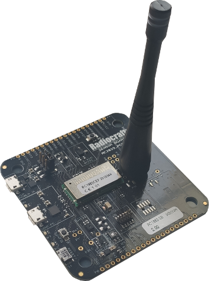
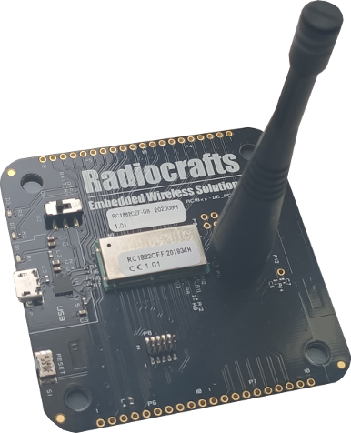
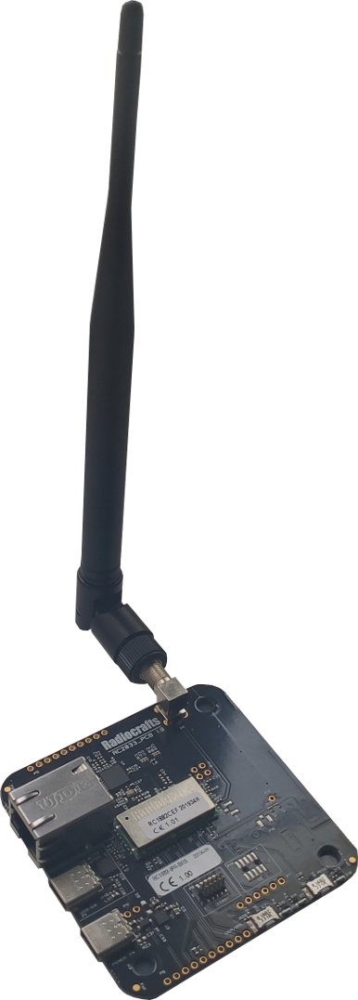

Wykorzystane urządzenia

Leaf Node
Płytka będąca węzłem końcowym sieci typu mesh. Wyposażona w 6 czujników: -temperatury i wilgotności (SHT35 oraz HDC2010) -natężenia światła (ALS-PT-315C) -zanieczyszczenia powietrza (SGPC3) -detektor Halla (SL353LT) -akcelerometr (LIS3DE) Dane pozyskane z w/w czujników przesyłane są poprzez mesh router do routera brzegowego z wykorzystaniem protokołu CoAP. Funkcjonalność płytki została wzbogacona o mechanizm zdalnej kontroli oświetlenia za pomocą przycisku umieszczonego na routerze brzegowym. Po uruchomieniu oświetlenia znajdującego się przy węźle końcowym stosowna informacja zwrotna wysyłana jest jako "piggybacked response" do border routera.
Mesh Router
Płytka będąca węzłem pośredniczącym w wymianie danych pomiędzy węzłem końcowym a routerem brzegowym.
Dodatkowo została zaimplementowana funkcjonalność pozwalająca na pozyskiwanie informacji o jakości połączenia tej płytki z routerem brzegowym. Pozyskana wartość RSSI wysyłana jest do chmury, skąd poprzez REST API umieszczana jest na stronie internetowej (patrz: zakładka Dashboard). W celu kontroli poprawnośći połączenia pomiędzy węzłami w oprogramowaniu została zaimplementowana funkcja pozwalająca na sygnalizację poprawności połączeń przy pomocy diody LED.


Border Router
Router brzegowy sieci mesh odpowiada za przesyłanie odebranych danych z poszczególnych węzłów sieci, a następnie przesłanie ich do chmury. Dzięki wbudowanemu gniazdu ethernet istnieje możliwość bezpośredniego przyłączenia płytki internetu z wykorzystaniem np. switch'a. Pozyskane dane transmitowane są z wykorzystaniem metody POST protokołu CoAP. Ponadto funkcjonalność płytki routera brzegowego została wzbogacona o system kontroli oświetlenia przy węźle końcowym. Za pomocą przycisku wbudowanego w płytkę możliwa jest komunikacja z systemem oświetlenia umieszczonym przy "Leaf Node". Aby móc zweryfikować poprawne odebranie wiadomości przez urządzenie docelowe została zaimplementowana sygnalizacja z wykorzystaniem diody LED (węzeł końcowy po otrzymaniu sygnału sterującego odpowiada potwierdzeniem oznaczającym uruchomienie światła). Po otrzymaniu potwierdzenia dioda LED wbudowana w router brzegowy informuje, czy oświetlenie przy węźle końcowym jest włączone. Router brzegowy oprócz przekazywania danych pozyskanych z czujników do chmury sam wysyła informacje dotyczące stanu połączeń urządzeń w sieci (patrz: zakładka "Dashboard") dzięki wykorzystaniu funkcji dostarczonych przez producenta w module sieciowym. Dzięki mechanizmowi "Over-The-Air Programming" istnieje możliwość aktualizacji/zmiany oprogramowania w pozostałych węzłach sieci z wykorzystaniem jedynie łączności bezprzewodowej. Implementacja odpowiedniego oprogramowania do border routera skutkuje wysłaniem ciągu ramek konfigurujących "podmianę" oprogramowania w urządzeniu docelowym.